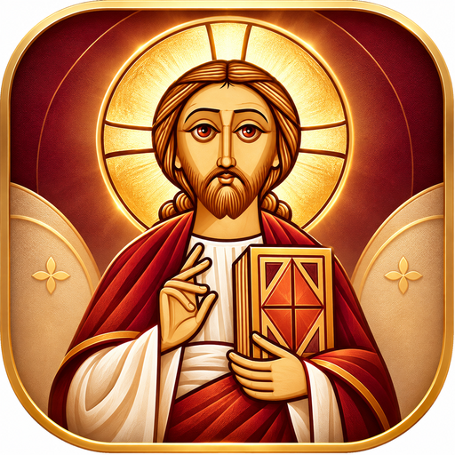
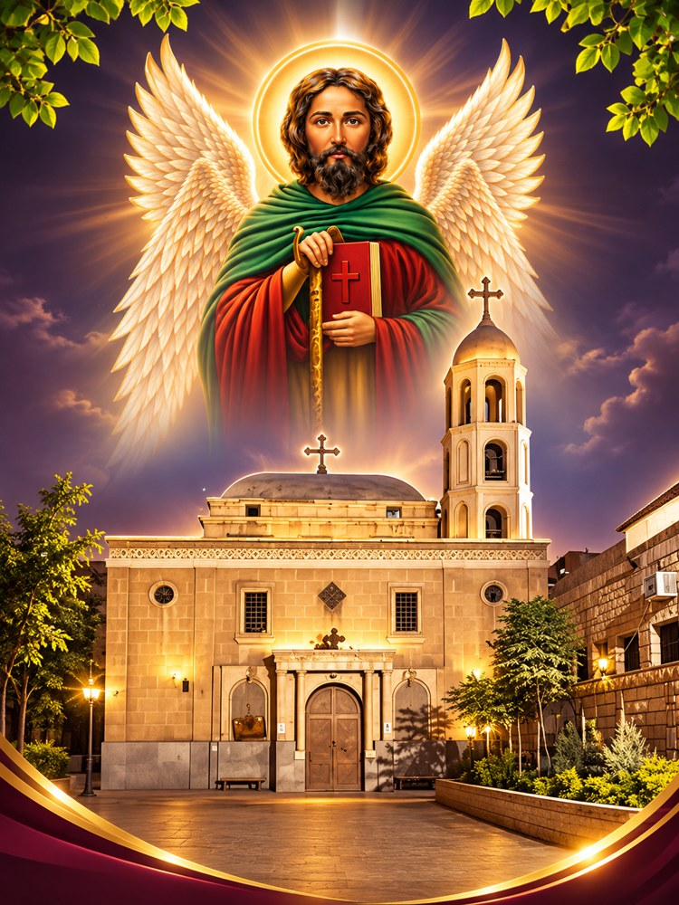

نوتتي الروحية
رفيقك في رحلتك الروحية اليومية
كنيسة الأنبا تكلا هيمانوت الحبشي بأشمون
تحميل أحدث إصدار لأندرويدفتح التطبيق للآيفون والآيبادتحميل مجاني • لا يحتاج إنشاء حساب

الكتاب المقدس
الأجبية
صلاة يسوع
التدريبات الروحية
النوتة اليومية
التقارير الروحية
طريقة التثبيت على أندرويد
- حمّل ملف APK من زر التحميل أعلاه.
- افتح الملف، وإذا طلب أندرويد السماح بالتثبيت من هذا المصدر، اسمح للتطبيق الذي تستخدمه للتحميل فقط.
- ثبّت التطبيق. يمكنك إلغاء إذن التثبيت من هذا المصدر بعد الانتهاء.
لا تحذف الإصدار القديم قبل حفظ بياناتك. التحديث فوقه يتطلب نفس شهادة التوقيع.
التثبيت على iPhone وiPad
- افتح هذه الصفحة في Safari.
- اضغط فتح التطبيق للآيفون والآيباد.
- من المشاركة اختر إضافة إلى الشاشة الرئيسية، ثم إضافة.
- افتح التطبيق من الأيقونة مع اتصال بالإنترنت أول مرة حتى تكتمل تهيئة المحتوى.
نسخة الويب تحفظ بياناتها محليًا، وتدعم النسخ الاحتياطي. التنبيهات المجدولة أثناء الإغلاق غير متاحة حاليًا.
شارك التطبيق
امسح الرمز لفتح صفحة التحميل.
الخصوصية
تُحفظ سجلات الأنشطة الروحية محليًا على جهازك. يحتاج تنزيل التحديثات والتحقق منها إلى اتصال بالإنترنت.